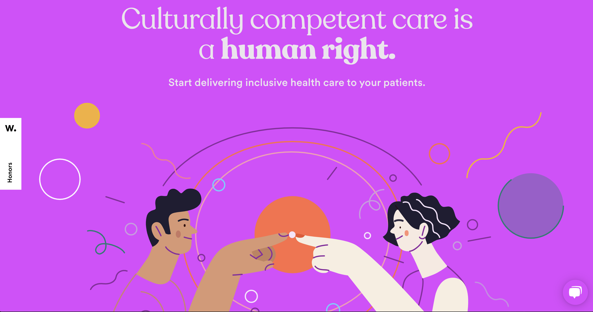
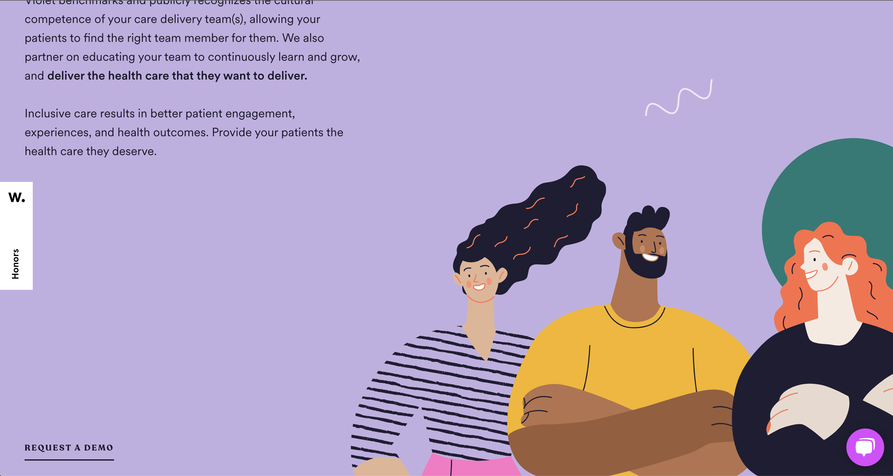

Week 2 questions Description

Spend two minutes with the experience and notate in granular detail (steps) each action you take.
-
First I can swipe the mouse on the home screen, swipe down, and it will introduce me to this site and give me a better understanding of healthcare.
- There's a video in the middle that I can watch to understand what nursing is and how to do it, and it provides a better platform for the nursing team.
- After that there is a benchmark, the interface is to collect and analyze important data about each provider's identity, professional experience, education, etc. to understand their cultural competencies. Then in the educational interface, nursing companies use these experiences to upskill nursing workers through carefully planned continuing education to provide inclusive healthcare.
- Scrolling down the page, I notice elements rotate past them or the background color changes. After approaching the library section, vertical scrolling changes to horizontal scrolling. The graph for each resource also grows if you hover over them. The overall effect of the design is a personalized user experience, just like the company wants all communities to get from the healthcare system.
- At the bottom of the interface, there is the contact information of the nursing company. If I am interested, I can contact them.
What was the first element you paid attention to when interacting with the experience?
The first element I noticed was its interface design, which included bold colors and typography, animations and illustrations.
What element did you spend the most time engaging with?
I spend the most time with scrolling interface libraries, and if you hover over them, the graphs for each resource grow. It has an interface to introduce the project after each small picture is clicked.
What was the most common action in your interaction with the experience?
My most common action is to swipe the mouse, because this interface is controlled by swiping.
What one term from the circumplex model of affect best describes the feeling that was most common during your interaction?
"Relaxed" in the circumplex model best describes the feeling I feel most often during interactions, because the overall style of the site tends to be fresh, natural and vibrant colors, most of which are dominated by purple, which can make me feel is a website about health and makes me feel happy instead of nervous.
Week 3 questions Intentions
What is your impression of the intended primary goal of the interactive experience?
My impression of the interactive experience is that it is more interesting, users can interact with different types of websites in different ways, but it will feel a little complicated in the design process.
What stylistic techniques does the experience use to communicate what is sees as the most important aspect of the interaction?
The most important aspect of interaction design is what experience the website/game wants to bring to users, how to interact with users, whether its interface style and color design conform to the theme, and can bring users a good experience.
What is your impression of the intended length of the interaction?
I spent about half an hour browsing the site I was going to make. Because the website needs a lot of jumping interface, and the content inside needs to let the user know what the website is doing, in order to better use the website, the user needs to click to view the functions of the website.
What is your impression of how often you are intended to interact with the experience?
The interaction frequency of my website is expected to be that users can open it three times a week. The theme I want to choose is about fitness. Generally speaking, users may only open it when they are exercising during the week.
What existing design pattern (media, metaphor, interface etc) does the experience's style reference?

I want to use the cartoon style to design the interface elements with reference to the design style in this website, and then add dynamic effects to make the interface flow.
What does this reference suggest about how you should feel and act when engaging with it?
This reference website adds dynamic effects. I want to add dynamic effects to the pictures or elements on my website. For example, the color of the interface can change during the sliding process, or the pictures appear from both sides of the page, so that the entire The website has an animation effect.
Week 4 questions Evaluatio
What is your impression of the intended audience for this interaction?
The audience for this project is not limited by age, because for nursing, anyone can learn about it.
What element of the design backs up this impression?
The design elements are designed with cartoon images. Most of the nursing subjects are the elderly and young people, but some parents will visit this website for their children, so the audience of this website is not limited to any age. For this elements of the interface are in a more dynamic style that doesn't look rigid or boring.
What is the most frustrating element of the interaction?
One of the frustrating points is the dynamic design elements of the interface.
Why do you think they designed the interaction in this way?
They design in a sliding way, on the one hand for the aesthetics of the interface, on the other hand for the convenience of users to browse, all the information in the interface can be clearly presented to the user, so that the user can Read it, and save time to learn about nursing, instead of spending time looking for buttons on another interface.
What is an alternative approach to the interaction design of this element?
I think it is possible to make an arrow to change the icon with a mouse click, it would be more convenient to use the arrow instead of swiping.
What is the most satisfying element of the interaction?
The two elements that I am more satisfied with are the arrangement of its interface information and the color matching.
What makes it satisfying?
Its interface design is very orderly, looks neat and beautiful, coupled with cartoon images, this website can attract people's attention from the appearance.
Why do you think they designed the interaction in this way?
Because its information is presented on an interface, it is convenient for users to find information, and its color elements are also unique and vibrant, users will not get tired of browsing it, and parents' guidance to their children when using the website can also attract children's attention.
What is an alternative approach to the interaction design of this element?
A menu can be made on the side, and users can automatically jump to the corresponding page after clicking the content on the menu.
What makes it frustrating?
Because the scrolling of the icons at the bottom of the web page is inconvenient for a computer without a mouse, it is difficult to control the sliding of the interface, thus affecting the user's browsing experience.